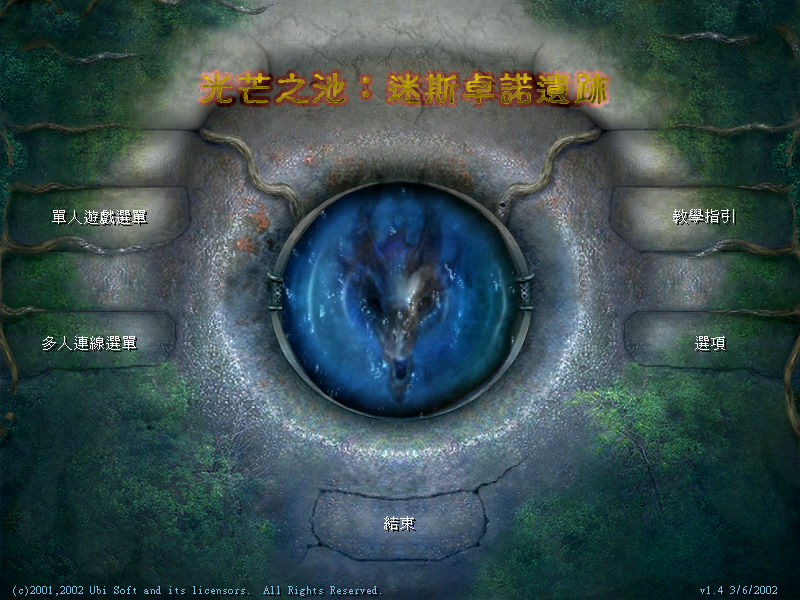
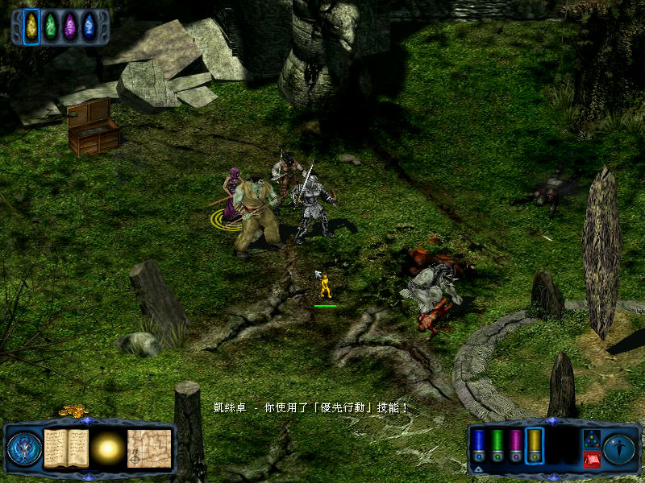

名稱：光芒之池：迷斯卓諾遺跡／劍與魔法的傳說／光芒之池2 (Pool of Radiance: Ruins of Myth Drannor，中文版)
簡介：Stormfront 2001年出品的角色扮演遊戲，由Ubisoft代理發行，為光芒之池系列的第
五部，以斜角3D畫面呈現，採團隊半即時方式戰鬥。2002年由第三波中文化並代理發
行 [待補]。


保護：光碟SafeDisc 2.70
備註：繁中版版本為1.4.3。
限制：由於SafeDisc保護關係，只能在XP系統上執行。